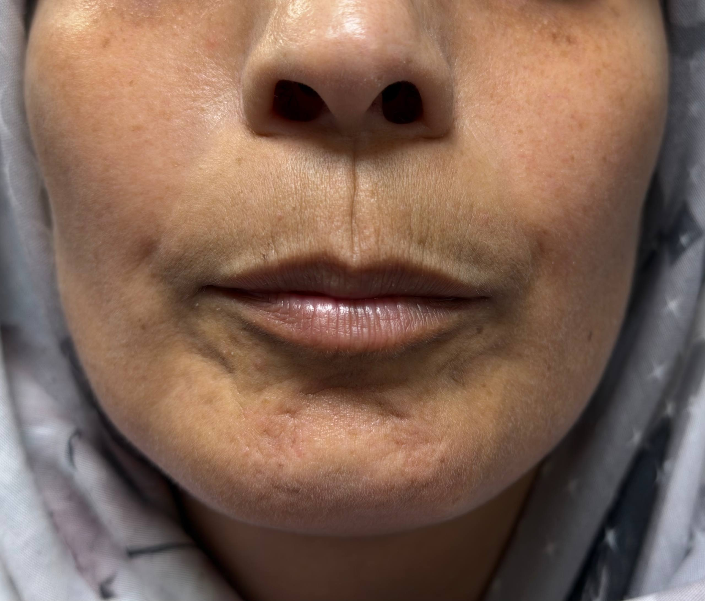
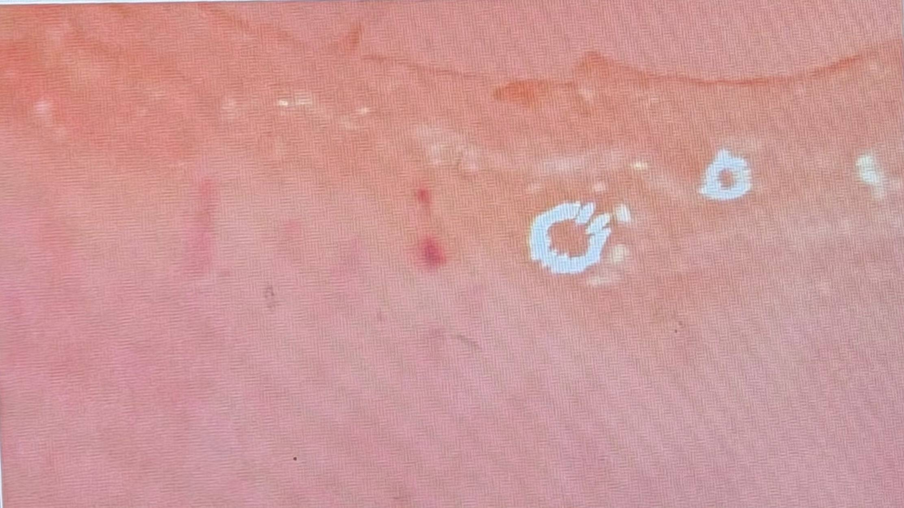
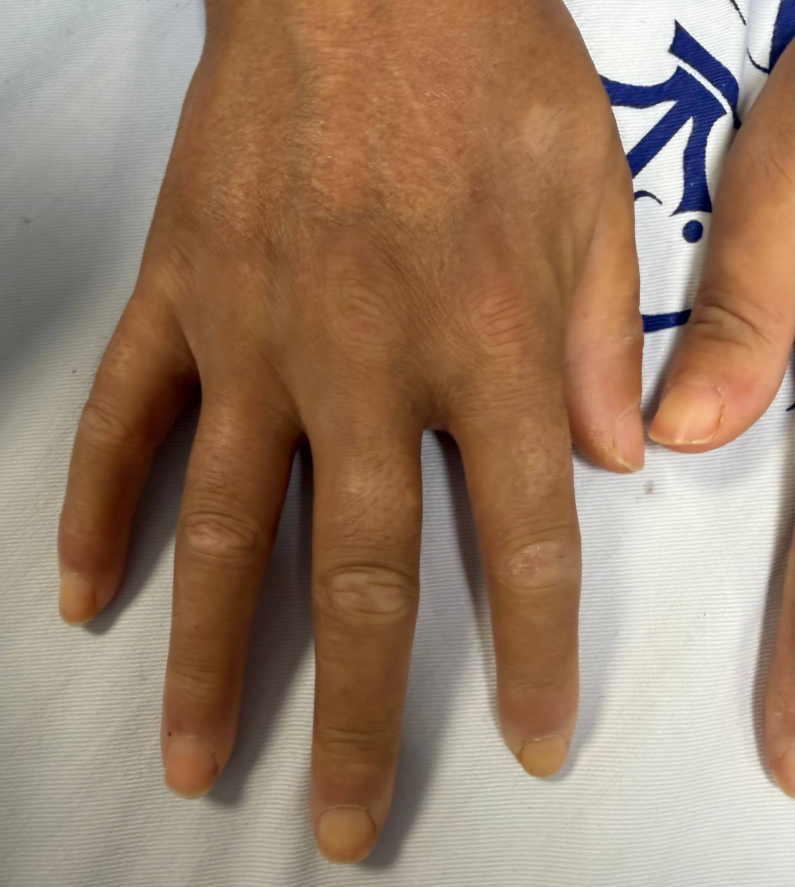
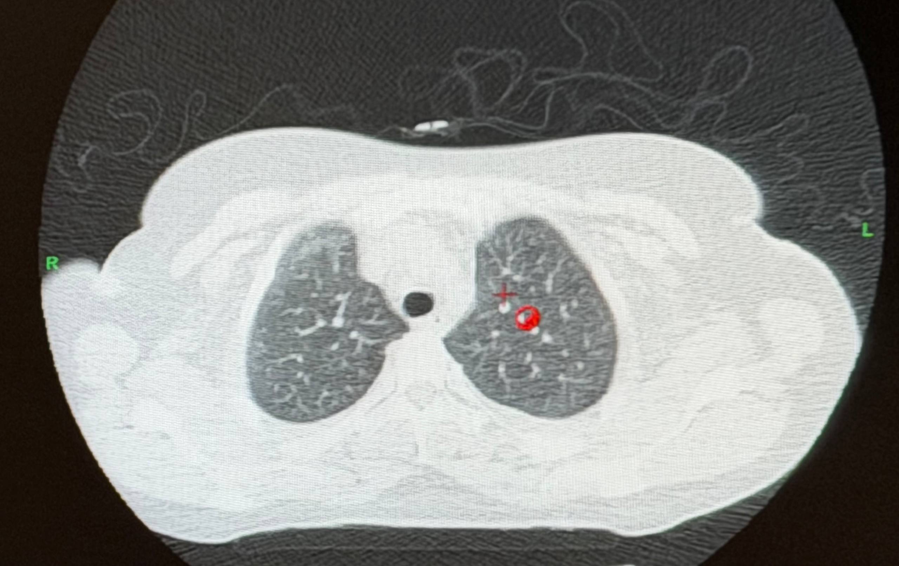
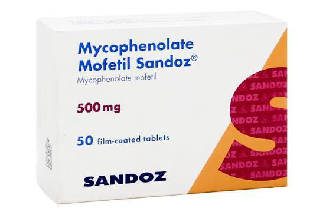
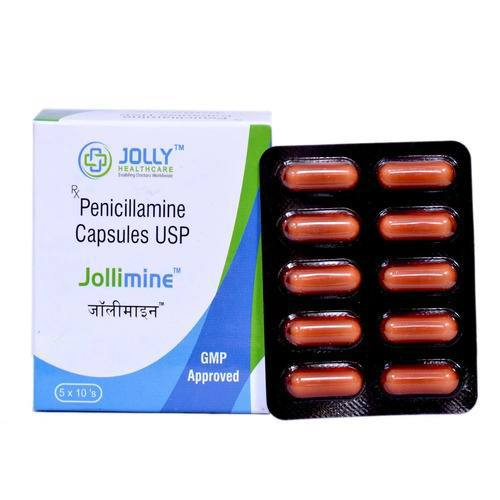

Systemic sclerosis (SSc) is a chronic autoimmune disease with vasculopathy and progressive fibrosis. Renal involvement includes scleroderma renal crisis (SRC) or drug-induced nephropathy (e.g. penicillamine).
Nephrotic syndrome (NS): proteinuria >3.5 g/24h · hypoalbuminaemia <3.0 g/dL · generalised oedema.

Chief Complaint: Progressive generalised oedema × 2 weeks
HPI: Oedema LL → UL → abdomen. Painless, non-erythematous, with heaviness and cold sensation. Multiple ED visits; Doppler USS: no DVT.
Drug History: Penicillamine 250 mg q12h × ~2 years for undifferentiated CTD
PMH: 3 NVDs · 1 induced abortion · thyroid medication in pregnancy
FH: Mother — thalassaemia + rheumatologic disease · Sister — rheumatologic disease
Alert, non-toxic. S1/S2 normal, lungs clear. Abdomen distended. 3+ bilateral pitting oedema to sacrum. Shiny skin over lower limbs. No joint tenderness.
| ✓ Generalised oedema LL → UL → abdomen | ✓ Heaviness + cold lower limbs |
| ✓ Dyspnoea × 2 post-meal | ✓ Nausea / anorexia |
| ✗ Fever / chest pain / cough | ✗ DVT signs (Doppler negative) |
| ✗ Clear Raynaud episodes | ✗ Haematuria |
| Test | Result | Interpretation |
|---|---|---|
| Haemoglobin | 11.8 g/dL ↓ | Microcytic hypochromic anaemia |
| Serum Albumin | 1.9 g/dL ↓↓ ⚠ | Severely low — critical |
| Total Protein | 4.24 g/dL ↓ | Markedly reduced |
| Serum Calcium | 7.0 mg/dL ↓ | Secondary to hypoalbuminaemia |
| Potassium | 3.4 mEq/L ↓ | Secondary hyperaldosteronism |
| Acid–Base | Metabolic Alkalosis | Aldosterone-driven H⁺ loss |
| Urine Protein (spot) | 466 mg/dL ↑↑ ⚠ | Heavy proteinuria — NS range |
| 24 h Urine Volume | 700 mL | Oliguria |
| Microalbumin (random) | 91.8 mg/L ↑↑ | Normal <30 mg/L |
| CRP | 3+ elevated | Systemic inflammation |
| Anti-Scl-70 / ACA | Positive ✓ | Confirms systemic sclerosis |




